Intro
After a decade dedicated to caring for my medically fragile daughter, I am ready for my work to expand beyond caregiving. I have been volunteering on our local city planning commission, sharing my extensive experience with permitting and design in the construction industry. I have also expanded my skillset by studying GIS at Colorado Mountain College (CMC). I have experience automating tasks using python, and processing large tabular databases with R. My knowledge of ESRI applications, specifically ArcMap and ArcGIS Pro, has allowed me to turn data into maps that speak clearly to policy makers, and resource managers.

My work as a mechanical engineer provided me much experience in project management and coordination. I designed building HVAC systems for large commercial, and high-end residential structures. On some projects I acted as owner’s representative, subcontracting out other disciplines. In those cases, I managed deliverables and timelines for our subcontractors. In other projects, an architect acted as the owner’s representative, and I was an active member of the multidisciplinary team. In all cases my work required close coordination, and problem solving, with a variety of professionals. As someone who is outgoing, I enjoyed the coordination meetings as much as the calculations!
As an engineer I was always mentoring, or being mentored, or both! I believe in lifelong learning. I hope to keep learning throughout my career. I will continue my education through experience, and through classes and conferences. When not engaging in professional development, you will find me improving my skiing technique, or my French, or coaching the local swim team… I am excited to join a workplace that also values learning and work/life balance
Thank you for visiting my Portfolio. I hope that you are here to hire me, or buy some art!! If you want to see more of my photography, check out my instagram at: wonderjoy
Geographic Information Systems - GIS
Below is a sampling of the projects I have completed as part of my GIS studies. Each project took me through a diverse set of GIS skills, and each project was FUN! Scroll through, and let me know if you have any questions.

This map presents data from The National Agriculture Imagery Program, NAIP. I retrieved this data using Google Earth Engine's code editor. NAIP imagery consists of 4 electromagnetic bands. The bands are in the red, green, blue, and near infrared wavelengths of the electromagnetic spectrum. These bands can be very useful for visualizing the health of agricultural crops. However, they also can be used to visualize prehistoric soil disturbances. This map shows some archeologically significant locations just south of Phoenix Arizona. Please check out the links below to learn about the Ancestral Native Americans who lived in this area, and other archeological applications for GIS.
Goggle Earth Engine Coder
The Hohokam Native American People
National Geographic Article about the Gila river
Using GIS to aid in archeological discovery
______________________________________________________________________
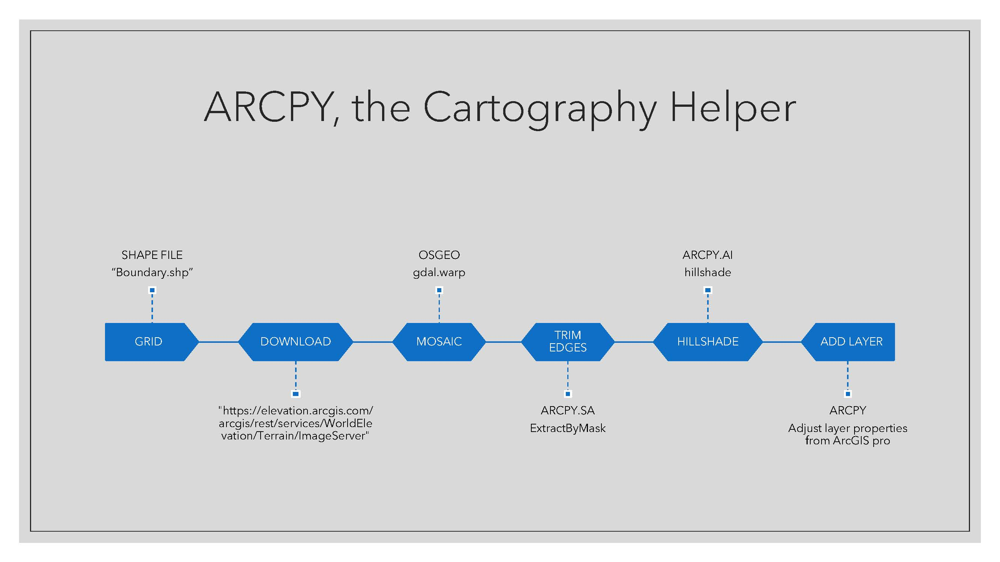
My most recent class at CMC is a special topics GIS class focused on programming and automating for GIS. I chose to automate a task I do for every map I make: creating a background. Click on the image above to see slides describing my coding journey with this ArcGIS tool. Click on the link below to download my tool (.atbx file) and try it out yourself!
Background generating tool
For the above project I used mostly the Python coding language. In order to incorporate it into ArcGIS I had to use the "ARCPY" library which holds Python functions compatible with ArcGIS.
______________________________________________________________________
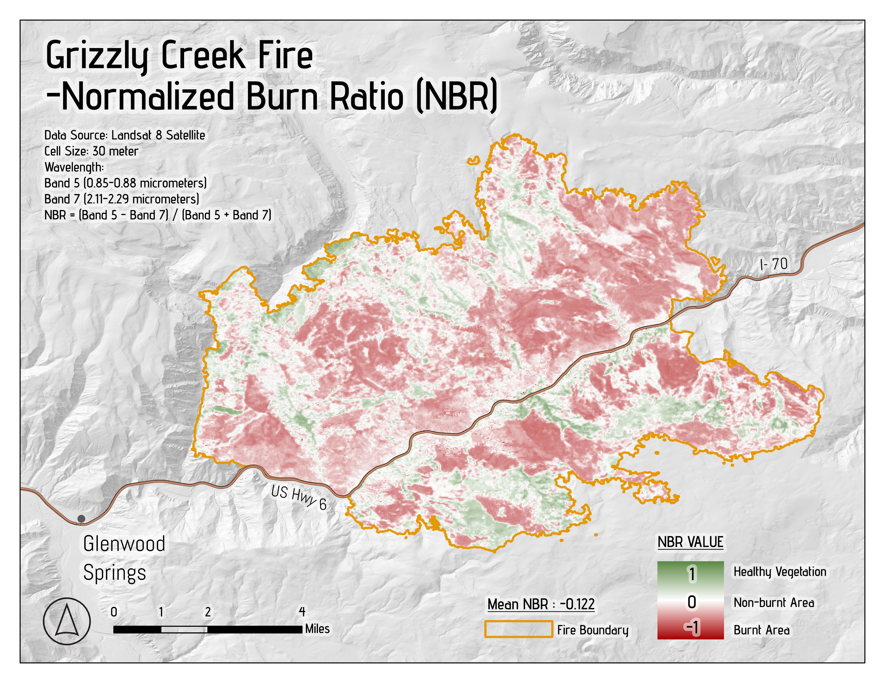
This map presents data from our Landsat 8 satellite in the near infrared and short wave infrared wavelengths of the electromagnetic spectrum. I used the bandwidth data to calculate the Normalized Burn Ratio (NBR). Using the NBR, we can visualize the impact of Colorado's Grizzly Creek fire with greater accuracy than we could with our "naked eye"!
Landsat Satellite Data
Check out the USGS Earth Explorer website to download Satelite data.
______________________________________________________________________

This map shows the Hansen Global Forest Change Index, in one of Colorado's National Forests. I used the Google Earth Engine Coder again here.
Goggle Earth Engine Coder
______________________________________________________________________
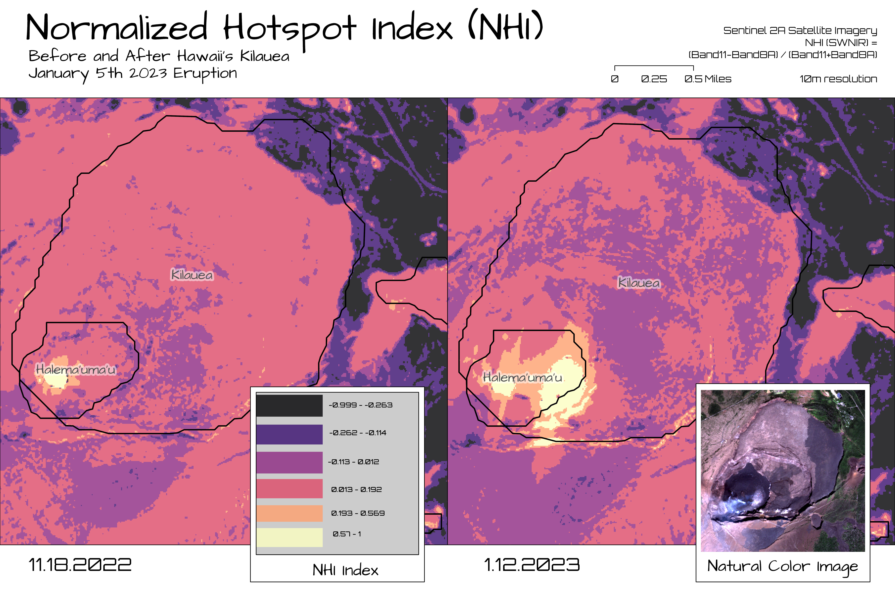
For this project I chose to study one of my favorite places on Earth: Hawaii! The big island of Hawaii is quite young geologically speaking. It is born daily thanks to its active volcanoes. On January 5th 2023, an eruption began within the Halemaʻumaʻu crater in Kīlauea’s summit caldera. I applied the Normalized Hotspot Index to satellite data before and after the eruption to depict the eruptions effects even better than could be done with natural imagery.
USGS Kilauea Eruption Updates
Check out the USGS website to read more about Kilauea.
Implimentation of NHI Algorithm on Infrared ASTER Data
Check out this scientific paper which informed my project!
______________________________________________________________________

This is a comparison of 2 different "supervised" classification techniques we use in GIS to map landcover. A classification is "supervised" if it is compared to on the ground data. In this case I used an image of the same Steamboat Springs, Colorado area to digitize pockets of different landcover, ie forest, water... Then I used the resultant polygon file to inform or "train" ArcGIS pro's classification tools. ArcGIS' Pixel Based Classification turned out to be slightly more accurate in this case than the Object Based Classification. This is perhaps due to how mixed the area's different land covers are. Alternatively, the Object Based accuracy could be affected by the river being only a few pixels wide, which makes it vulnerable to being grouped with its neighboring non-river pixels. I look forward to doing more analysis on different landforms, and at different scales so I can really harmonize the methods and applications.
Landsat Satellite Data
Check out the USGS Earth Explorer website to download Satelite data.
______________________________________________________________________
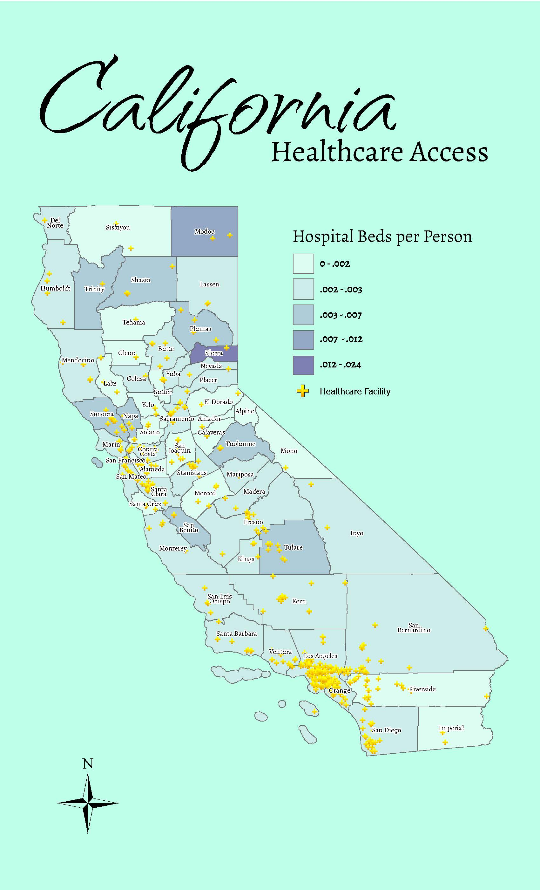
This map utilizes choropleth style visualizations to preserve the anonymity of the census data. I represented the healthcare facility locations as simple point data. I enjoyed this project because the analysis dug into some social and economic issues. The cartographic style is splashy as a tribute to the sunny California coast!
California Census Data
I obtained Healthcare Facility location data through ARCgis Online.
______________________________________________________________________
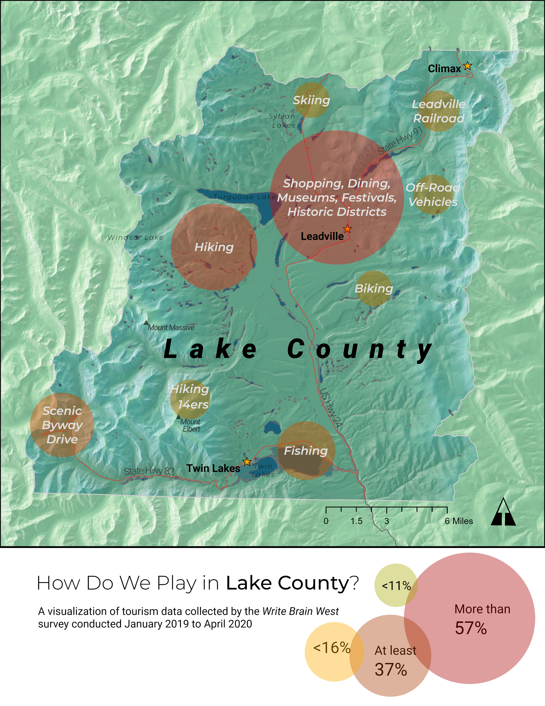
This project was a collaboration with the Leadville Visitor Center. I transformed data gathered in their guest log book, and data obtained by the Write Brain West Survey, into a map showing general activity locations. I also depicted the relative popularity of each tourist activity by linking the symbology to the survey data.
Data was provided by the Leadville Visitor Center and the Write Brain Trust.
I made the basemap using by transforming elevation data with the hillshade tool in ArcGIS pro.
______________________________________________________________________
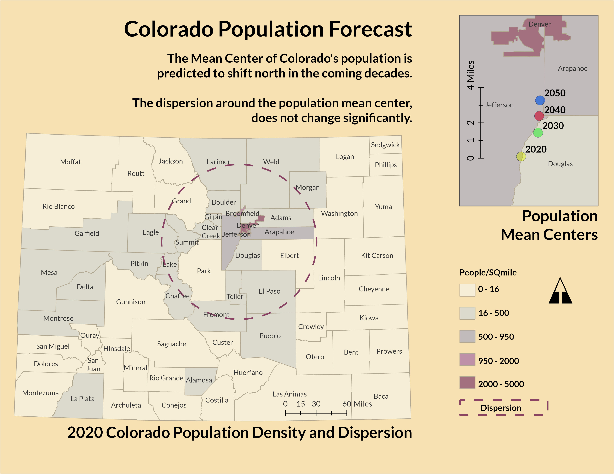
This project was an exercise in Spatial Statistics. Specifically, I was determining the mean center of Colorado's population, and mapping it to demonstrate a projected shift to the north. I also calculated the population dispersion, which did not change over the years I analyzed.
This analysis was possible using population projections from The Colorado Information Marketplace.
______________________________________________________________________
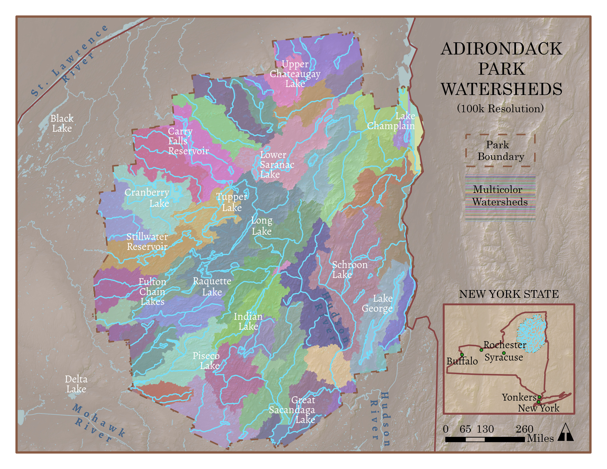
This is a watershed analysis of New York's Adirondack State Park. A watershed is the upslope area that contributes flow to a common outlet, like a river. My map colorized the different watersheds so that their boundaries, or drainage divides are easily discernable.
This project started with a DEM of the park area, then involed a large amount of data processing with ArcGIS pro's geoprocessing tools. In order, the tools used were: Flow Direction, Sink, Fill, Flow Direction (again), Flow Accumulation, Con, Stream Link, and finally- Watershed.
Art
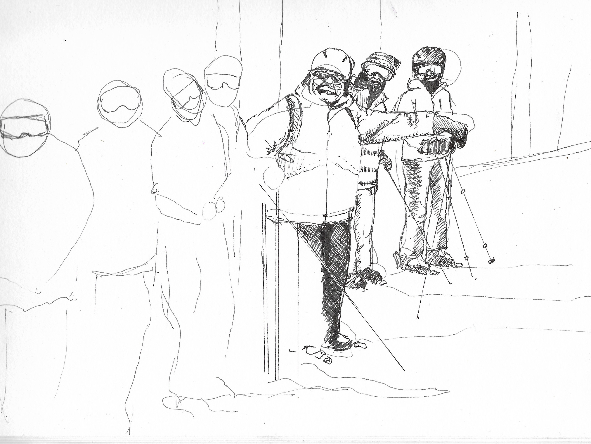
Art has always been with me. There have been times in my life when I thought Art would be my occuaption, not just my hobby. Whether my art brings me money, or peace, or frustration... it's always there, right at my fingertips.
Lately I have been depicting animals. I am most comfortable drawing, either with pen or pencil. I am least comfortable with watercolor paints. So my latest project combines my most favored and least favored mediums. These little hummingbirds were drawn over and over again as I ruined them with my clumbsy watercolor technique. Practice makes perfect! Each of these little birds is the result of at least 2 or 3 itterations. I have done them on white paper so that I can better scan them and have them printed on notecards. (for purchase on Etsy!) This group of hummers can be found in Colorado seasonally, and I am hoping to put the originals in one of our local boutiques so some of our other seasonal visitors can admire them.
If you would like to purchase any of my art, check out my Etsy page linked here:
M. Walker Art
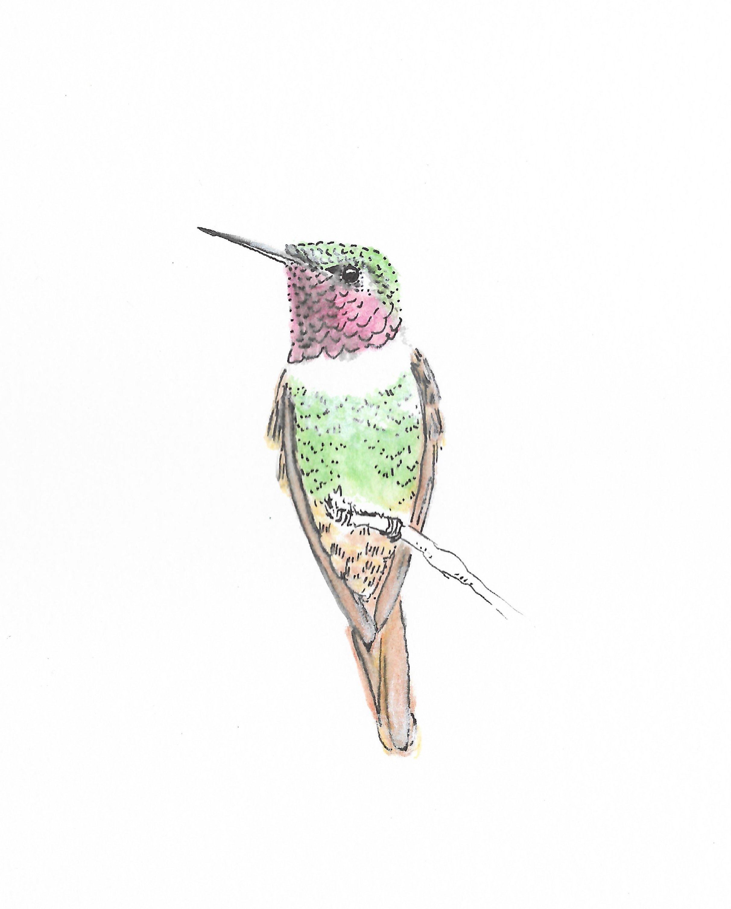
The tiniest of raptors.
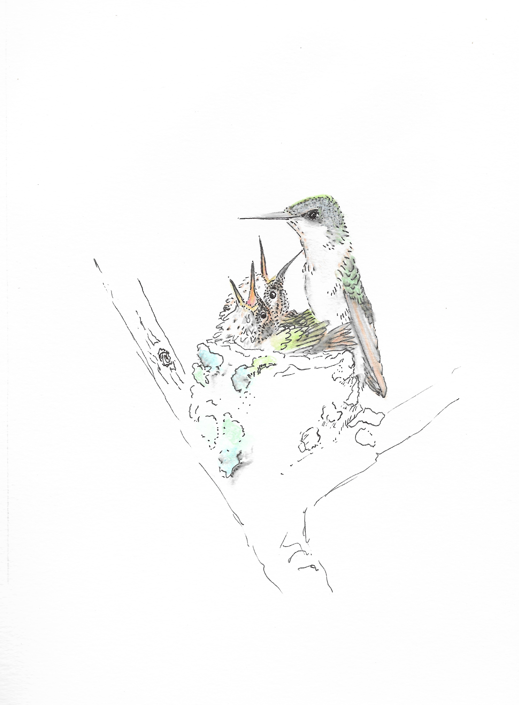
In my head I've titled this one "congradulations", then I chuckle to myself...
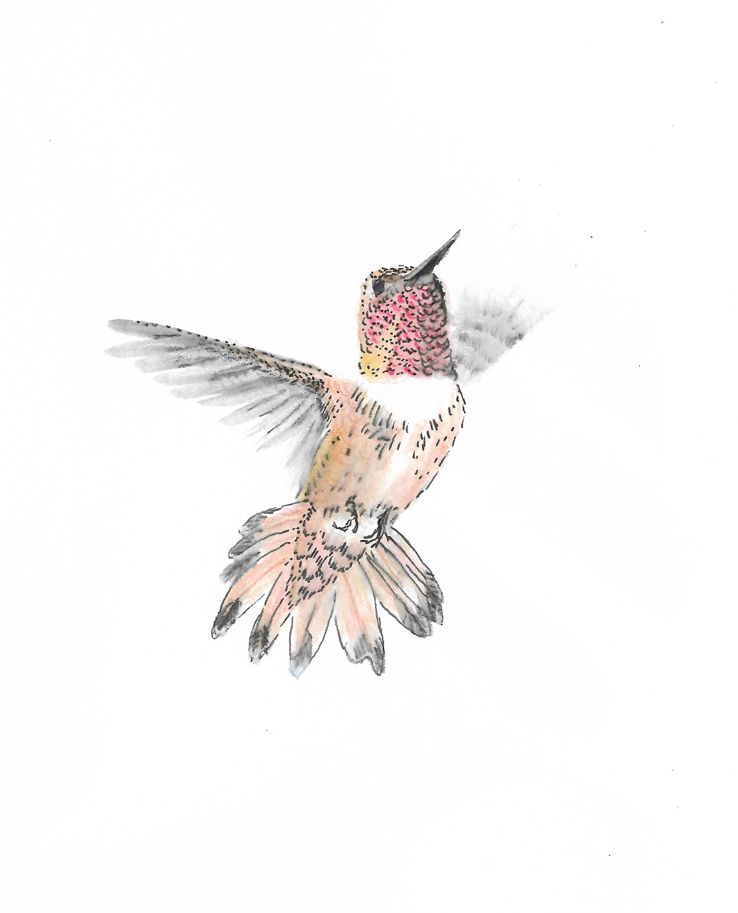
Our famously grumpy, Rufus Hummingbird.
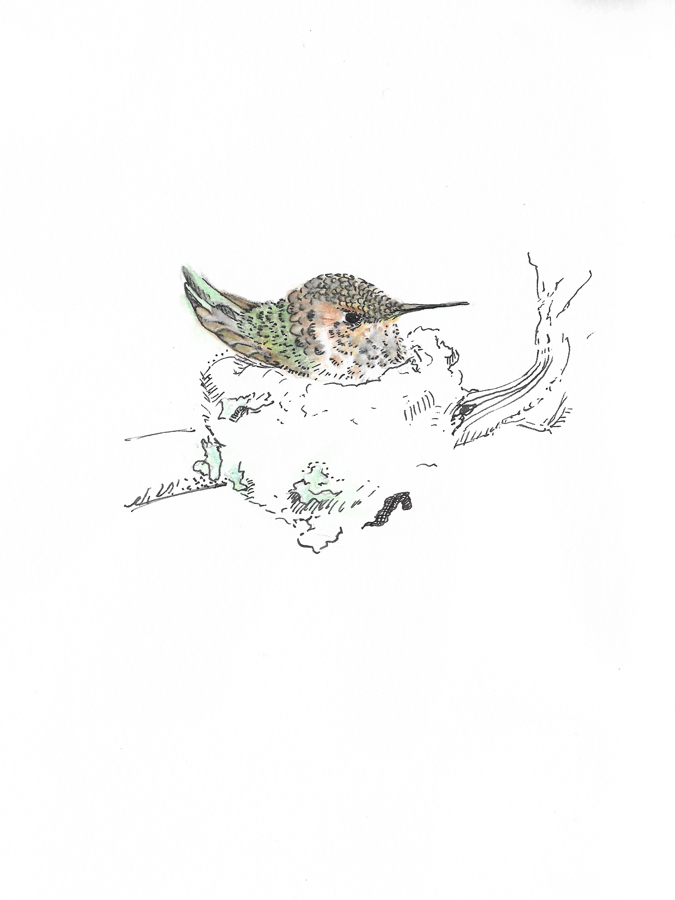
New house.
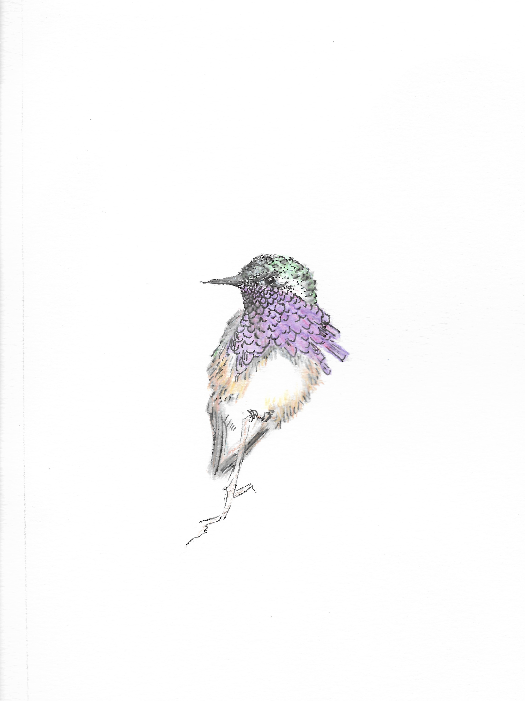
Judgemental Calliope.